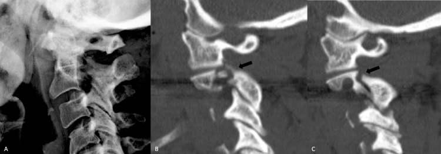
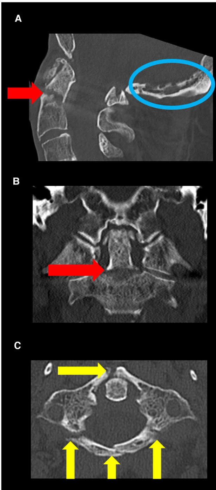

颈椎骨折
上颈椎（C0–C2）与下颈椎（C3–C7）分开讨论：分类体系不同，稳定关键不同。
1 · 解剖与机制
上颈椎（C0–C2）负责头部旋转，寰枢关节承担约一半颈部旋转活动。
稳定关键：齿突加横韧带。横韧带断裂可导致寰枢不稳。
下颈椎（C3–C7）是典型运动节段：椎体、椎间盘、关节突构成三关节复合体。
致伤机制：屈曲、伸展、轴向负荷、旋转、剪切。常见于车祸、高处坠落、潜水、运动损伤。
高位颈髓损伤可影响呼吸，因为膈神经发自 C3–C5。
展开细节：解剖要点
寰椎没有椎体，由前后弓与侧块构成；枢椎齿突向上嵌入寰椎环内。
C3–C6 棘突多分叉，C7 棘突不分叉且长，称隆椎，是体表定位标志。
椎动脉经 C1–C6 横突孔上行。横突孔骨折、关节突脱位时警惕椎动脉损伤，CTA 是常用评估手段。

观察点：A 为伤后 2 个月侧位 X 线：C2 在 C3 上向前移位（硬质颈托固定下仍出现）；B、C 为伤后 3 个月矢状位 CT：峡部骨折不愈合、骨折间隙增宽。固定下仍移位提示不稳定。
局限：单个病例的随访影像；无伤后即刻影像对比；该患者的前路手术决策针对个体，不构成通用指征。
来源：Ashraf AM, Houten JK. Cureus. 2021; 图 2 · 许可：CC BY 3.0

观察点：C 为轴位 CT：C1 前弓骨折（右侧）、后弓双骨折、左外侧块骨折（黄箭头），即 Jefferson 爆裂；A 为矢状位：移位的齿突 II 型骨折（红箭头）。一图同时展示上颈椎两类核心损伤。
局限：合并严重冠心病的复杂病例；蓝圈为后颅窝蛛网膜囊肿（偶然发现，与骨折无关）；单病例。
来源：Di Francesco ME 等. Front Surg. 2023; 图 1 · 许可：CC BY 4.0
2 · 初评与红旗
先完成 ABCDE 初评，气道优先。采取脊柱运动限制等适合患者的保护措施，直至完成可靠评估；由训练有素的人员协调转运，避免不必要的脊柱活动。不对所有患者规定统一的固定或翻身方式。
神经检查按 ISNCSCI / ASIA 标准：运动、感觉平面、骶部残留功能。
影像决策可借助 NEXUS 标准与 Canadian C-spine Rule（见本单元来源）。
🚩 红旗：进行性神经功能恶化；呼吸费力或血氧下降；低血压伴心动过缓、皮肤温暖干燥（神经源性休克）；颈部进行性肿胀、声音嘶哑、吞咽困难（椎前血肿压迫气道）；上肢放射痛伴肌力下降。
展开细节：神经源性休克 vs 失血性休克
神经源性休克：低血压、心动过缓、皮肤温暖干燥（交感张力丢失）。
失血性休克：低血压、心动过速、皮肤湿冷苍白。两者可并存，先按失血处理并寻找出血源。
3 · 影像与分类
成人高能量创伤：CT 用于详细评估骨性结构。MRI 评估韧带、椎间盘、脊髓与后方韧带复合体。
上颈椎采用 AO Spine 上颈椎分类：按部位分三区 —— I 枕髁与颅颈交界；II 寰椎环与寰枢关节；III 枢椎与 C2–3。每区按损伤性质分为 A（孤立骨性）、B（韧带 / 张力带）、C（移位）。另记录神经状态 N0–N4 / NX 与修饰因子 M1–M4。
下颈椎采用 AO Spine 下颈椎分类：形态 A（压缩，A0–A4）、B（张力带，B1–B3）、C（移位）；关节突 F1–F4；神经状态 N；修饰因子 M。
记住：分类是共同语言，用于准确描述损伤、促进沟通。它不直接等于手术指征。
展开细节：下颈椎各型含义（据 AO 官方）
A0：棘突、横突、椎板等非结构性骨折。A1：单终板楔形压缩。A2：双终板劈裂（冠状劈裂）。A3：单终板爆裂。A4：双终板爆裂。
B1：骨性后方张力带断裂。B2：后方韧带或骨韧带复合断裂。B3：前方张力带损伤（过伸）。C：任何方向的移位 / 脱位。
F1：无移位关节突骨折（骨块 <1 cm 且 <40% 侧块）。F2：潜在不稳的关节突骨折。F3：浮动侧块。F4：病理性半脱位或交锁 / 脱位。可标注双侧（BL）。
N0 神经完整；N1 一过性神经功能障碍已恢复；N2 神经根症状；N3 不全脊髓损伤；N4 完全脊髓损伤；NX 无法检查。
4 · AO 原则如何适用
AO 骨折治疗原则：按部位与损伤选择相对稳定或绝对稳定、保护血供、适当且安全的早期活动。
在颈椎体现为：恢复可接受的力线与节段序列（不苛求每种损伤都达到解剖复位）；依据神经受压的影像证据决定是否减压；重建与损伤相称的稳定；尽早在安全范围内开始康复。
B1 是骨性后方张力带断裂（骨折线经骨），即使韧带连续也不稳定；B2 为后方骨韧带复合损伤。判断看骨性与韧带整体，不能只看张力带是否完整；怀疑韧带损伤时用 MRI 辅助。B3 为前方张力带损伤，评估逻辑不同。
神经状态（N）决定减压的紧迫性。分类提供框架；治疗还取决于合并伤、骨质量、年龄与患者整体情况。
5 · 治疗选择与限制
非手术：硬质颈托。Halo 背心曾广泛使用，限制包括老年耐受差、钉道感染或松动、护理负担重。
手术入路：前路、后路或前后联合。依据压迫部位、损伤形态与团队经验选择，没有唯一正确入路。
复位决策个体化，需要神经监测条件。本课程不给出统一复位操作流程。
特殊人群：骨质疏松者固定把持力差；强直性脊柱炎者轻微创伤即可发生长节段不稳骨折，处理原则不同。
展开细节：两种常见上颈椎损伤的教学要点
寰椎 Jefferson 骨折：若横韧带完整（IIA），多可硬质颈托治疗并随访；横韧带断裂则不稳，倾向手术。
齿突 II 型骨折：治疗争议大。年龄、骨折线位置、骨质量、合并症都影响愈合与选择，个体化决策，不套统一公式。
6 · 并发症与随访
- 神经功能恶化；高颈椎损伤的呼吸衰竭。
- 前路术后吞咽困难、声音嘶哑；椎前血肿。
- 内固定失败、骨折不愈合、迟发后凸畸形。
- 慢性颈痛；椎动脉损伤相关的缺血风险。
- 长期卧床相关：VTE、压疮、肺炎、尿路感染。
随访：定期神经功能复查；影像按本地方案；康复训练；骨质疏松评估与跌倒预防。
7 · 病例自测
病例 1-1（合成教学病例）：45 岁男性，高处坠落，颈痛。CT 示寰椎前弓、后弓骨折（Jefferson 骨折），寰齿间距正常；MRI 横韧带完整。按 AO Spine 上颈椎分类，最合适的表述是？
病例 1-2（合成教学病例）：38 岁女性，车祸，C5/C6 双侧关节突交锁，MRI 见 C5/6 椎间盘突出压迫脊髓，查体为不全脊髓损伤（N3）。关于分类与决策，正确的是？
病例 1-3（合成教学病例）：70 岁男性，跌倒，C2 齿突基底部骨折（II 型），无神经症状。关于治疗，最合适的表述是？
病例 1-4（合成教学病例）：B3 与 B1/B2 的根本区别是什么？
8 · 官方影像资源
以下为 AO Surgery Reference 官方原页链接（含官方分类图例与讲解）。本课程仅作链接，不复制、不热链 AO 图片——按 AO FAQ，插图仅授权非商业演示（须带 AO 标识并注明来源），出版物或在线转载须另行向 AO 申请许可。
- AO Surgery Reference · 下颈椎 A0 定义
定位：下颈椎 A 型定义、分类三要素（神经 / 关节突 / 修饰因子）。 - AO Spine 下颈椎损伤分类口袋卡（PDF）
定位：下颈椎 A / B / C / F / N / M 官方定义。 - AO Spine 上颈椎损伤分类口袋卡（PDF）
定位：上颈椎 I / II / III 分区 × A / B / C 分型、神经 N / 修饰因子 M。
来源与许可 · 单元一
- AO Surgery Reference — Spine trauma · Subaxial cervical · “A0 - Minor, nonstructural fractures”
定位：下颈椎 A 型定义、完整分类三要素（神经 / 关节突 / 修饰因子）。访问日期 2026-10-04。 许可：AO Foundation 官网内容（链接查看）。 - AO Spine Subaxial Injury Classification System（官方口袋卡 PDF）
定位：下颈椎 A / B / C / F / N / M 官方定义。访问日期 2026-10-04。 License: CC BY-NC-ND 4.0（仅链接，未复制内容）。 - AO Spine Upper Cervical Injury Classification System（官方口袋卡 PDF）
定位：上颈椎 I / II / III 分区 × A / B / C 分型、神经 N0–N4 / NX、修饰因子 M1–M4。访问日期 2026-10-04。 License: CC BY-NC-ND 4.0（仅链接，未复制内容）。 - 期刊引文：Hoffman JR 等，NEXUS 标准，N Engl J Med. 2000；Stiell IG 等，Canadian C-spine Rule，JAMA. 2001。（定位：颈椎影像决策辅助）
- 真实影像 图 1-1、图 1-2：见各图来源与许可；随包 media_sources-spine.csv 记录作者、文章、图号、原文与许可链接。